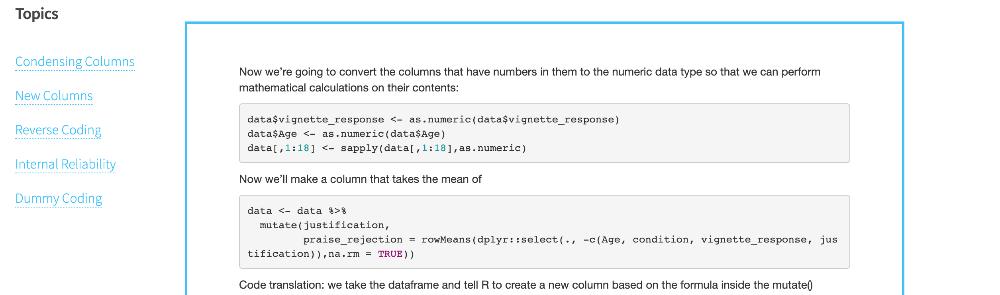

recent umich school of information masters graduate | ux & data specialist for hire
Website: Qualtrics Data in R
Overview
I'm currently a graduate teaching assistant for a course on research methods at the University of Michigan Department of Psychology. A large portion of the course is devoted to guiding students through implementing, analyzing, and writing up studies of their own. I know most of my students won't be going into academic research and I want to give them skills that will help them be more effective and critical consumers of published scientific research in any field. To teach them how to deal with their data, I created Qualtrics Data in R, a website to guide them through the full process of data analysis in R starting with their raw Qualtrics data.
Development
Contents
Because of course prerequisites, most of my students come in with a bit of experience with R, but their experience is limited to use through a GUI interface generated by the RCommander package. Previous instructors of my course had chosen to design instruction materials using RCommander as well, but I found the GUI limiting. Beyond this, I think learning basic R coding is a substantial skill benefit to my students in the modern economy.
I took the rather convoluted materials that previous instructors had built for RCommander and decided to adapt them for base R. In light of my background in UX and teaching, I thought I would lend my skills to move the materials on to a more organized and navigable platform than original content.
Organization
To start with, I organized my website pages based on the sections in the original materials. I then went through the content and determined the goals of each of the steps outlined in the original document and thought about how each of these goals would be most simply met in base R. I then added the preprocessing and processing pages. I also added a data visualization.
Launch & Troubleshooting
I first launched the website in November 2019 for my students in the fall semester. They were all working with different sets of data (generally off Amazon Mechanical Turk) with different variables and processing needs. I couldn't help them all individually learn to use the software and apply it to their unique datasets, but the website served as a resource that they could use that wasn't as overwhelming as stack overflow or datacamp might be for people with no background in coding (i.e. my students).
This isn't to say it was a perfect tool. Some of my explanations were still a bit confusing and some students who had trouble with the learning curve (e.g. understanding the purpose of scripts vs the console, setting the working directory) were still overwhelmed. There were also some issues that students ran into that the data I was working with wasn't ideal to use as an example for (e.g. getting rid of certain participant rows based on principle, taking an accuracy score rather than a Likert score).
Updates and Improvements
I took feedback from last semster's students on the strengths and problems with the original website to make improvements and push updates to the website so that my students this semester would have an enhanced experience with the resource. Because of COVID-19, U of M moved all courses online in mid March, around when students were meant to start running their independent studies and analyzing their data. My website came in particularly handy in this situation. It also meant I had to make updates that included more explanation and contextualization for the examples and techniques I used because students were going to be more likely to use my online resources than they were to show up to class held over video chat. At this point I also added the "Set Goals" section and numbered the pages so it would be clear that they were supposed to go thorugh the site in order. I also created a tempate R script for download that they could use to go thorugh the website tutorial.
The winter semester's paper also did not require a data figure, so I removed the page for the time being so as not to confuse my students.
Future Directions
Now my time as an instructor is over, I'm working on updating the website to serve more as a public resource than one designed specifically for the students in my class. I'll be producing a more generalizable dataset to use in examples and presenting the materials with more of a focus on producing academically publishable statistics in general rather than for working with a specific project rubric in mind.